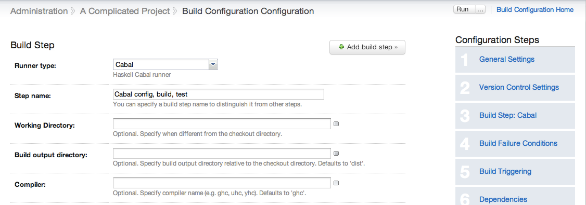
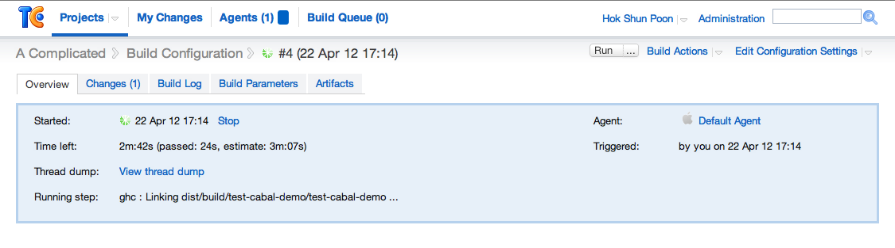
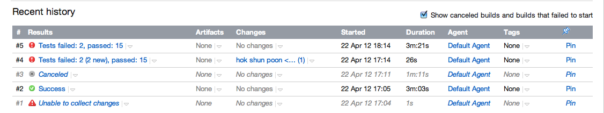

About
TeamCity is a continuous integration server. Cabal is a build and
package manager for Haskell programs and libraries. Even though you can quite easily invoke a build of a Cabalised Haskell program by running cabal-install through the command line runner, common operations such as managing and editing of build parameters or digging through long build logs can be a bit of a pain.
What you get...
This plugin integrates the Cabal build process with TeamCity in the following ways:
Easy configuration
 Set up and configure a Cabal runner Build Step from a standard Build Configuration page.Exposed agent properties
cabal-install's location and version are exposed as Agent Parameters called
cabal.path and cabal.version, allowing you to discriminate between build agents by cabal-install's version.
Build progress reporting and hierarchical build log
 TeamCity is notified of build events by monitoring Cabal's real time build output, allowing you to navigate it with TeamCity's standard Build Output page.test-framework integration for basic test reporting

See the number of successful and failed QuickCheck, QuickCheck 2, Smallcheck and/or HUnit test runs at a glance for test suites built with Max Bolingbroke's (@batterseapower) test-framework.
Finally! Quick and easy Continuous Integration for Haskell!
Download and Install
Grab cabalRunner.zip (latest release v0.5) from above (or alternatively, here) and drop it into
either ~teamcity/.BuildServer/plugins directory (UNIX)
(where ~teamcity is the home directory of the UNIX user used to run
TeamCity Server) or the <TeamCity Data Directory>/plugins directory (Windows).
Upgrade
Simply overwrite the existing cabalRunner.zip wherever you
installed the earlier version with the latest released zipfile.
TeamCity Server will see the updated zipfile and will automatically trigger an Agent-side upgrade for the plugin. However, TeamCity Server itself will not automatically switch to using the updated version of the plugin until after a restart, so be sure to restart TeamCity Server in order to activate the latest version.
License
This software is released under the MIT License.Contact
Cabal TeamCity Build Runner Plugin began as a very small hobby project, and was implemented in the space of a few days. In the likely event you find an issue, ping me on fushunpoon@googlemail.com. We'll see what we can do from there.
Contributing
Cabal TeamCity Build Runner Plugin is actually a derived work of Teamcity Unity3d Build Runner plugin so I wish to thank Mark Baker (@mcmarkb) for letting his project be modified beyond recognition.
Please fork this project and help me improve it! There is more work to be done for a totally seamless user experince. Start by looking at some of the known issues section of the README. Thanks!